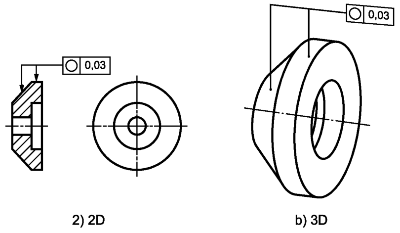

Выявленная в любом поперечном сечении цилиндрической или конической поверхности круговая линия должна быть расположена между двумя компланарными (лежащими в одной плоскости) концентрическими окружностями, разность радиусов которых равна 0,03, см. рисунок ниже

Выявленная в любом перпендикулярном оси конической поверхности поперечном сечении круговая линия должна быть расположена между двумя компланарными концентрическими окружностями, разность радиусов которых равна 0,1, см. рисунок ниже
Примечание — Определение выявленной круговой линии нестандартизовано.
Поле допуска в рассматриваемом поперечном сечении ограничено двумя концентрическими окружностями, разность радиусов которых равна значению допуска t, см. рисунок ниже
а — любое поперечное сечение